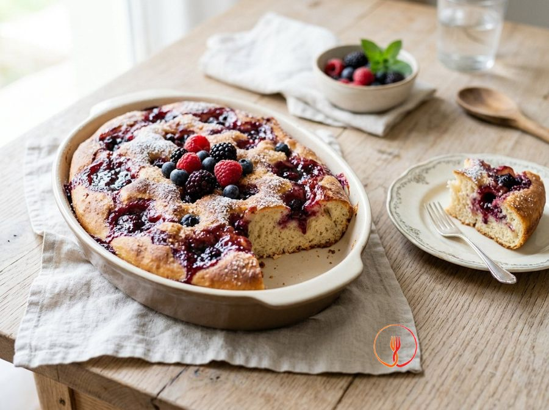

Forest Fruit Sweet Schiacciata
A soft sweet flatbread that uses jam as both filling and decoration. It is a simple Tuscan-style dessert, perfect for those who like treats that aren't too cloying.
Ingredients
- Strong white bread flour (Type 0)400 g
- Warm water250 ml
- Caster sugar60 g
- Dried yeast (Italian 'lievito di birra')5 g
- Extra virgin olive oil40 ml
- Forest fruit jam200 g
Allergens
Gluten
Method
- Dissolve the dried yeast in warm water with a teaspoon of sugar and let it rest for 5 minutes until it foams.
- In a bowl, combine the flour with the remaining sugar, the oil, and the water with the yeast, kneading for about 10 minutes.
- The dough should be elastic and slightly sticky; leave it to rise, covered, in a warm place for about 2 hours.
- Once doubled in volume, divide the dough into two parts and roll out the first half onto a greased baking tray.
- Spread half of the jam over the base, leaving the edges free, then cover with the second half of the dough rolled out thinly.
- Seal the edges well by pressing with your fingers so that the jam does not leak out during baking.
- Create dimples on the surface with your fingers and distribute the remaining jam in patches over the top.
- Bake at 200°C for about 20-25 minutes until the surface is golden brown and the sugar on top has caramelised.
- Brush with a little oil or sugar water as soon as it comes out of the oven to keep it soft.
Nutrition facts (estimate)
| Per serving (239 g) | Per 100 g | |
|---|---|---|
| Energy | 1653 kJ / 395.0 kcal | 691.6 kJ / 165.3 kcal |
| Protein | 8.0 g | 3.3 g |
| Carbohydrates | 68.0 g | 28.5 g |
| of which sugars | – g | – g |
| Fat | 10.0 g | 4.2 g |
| of which saturates | – g | – g |
| Fibre | – g | – g |
| Salt | – g | – g |
AI estimates based on average CREA / USDA data: indicative only, not a substitute for medical or dietitian advice.
Open the recipe in the app for the shopping list, ingredient sheets and nearby shops.